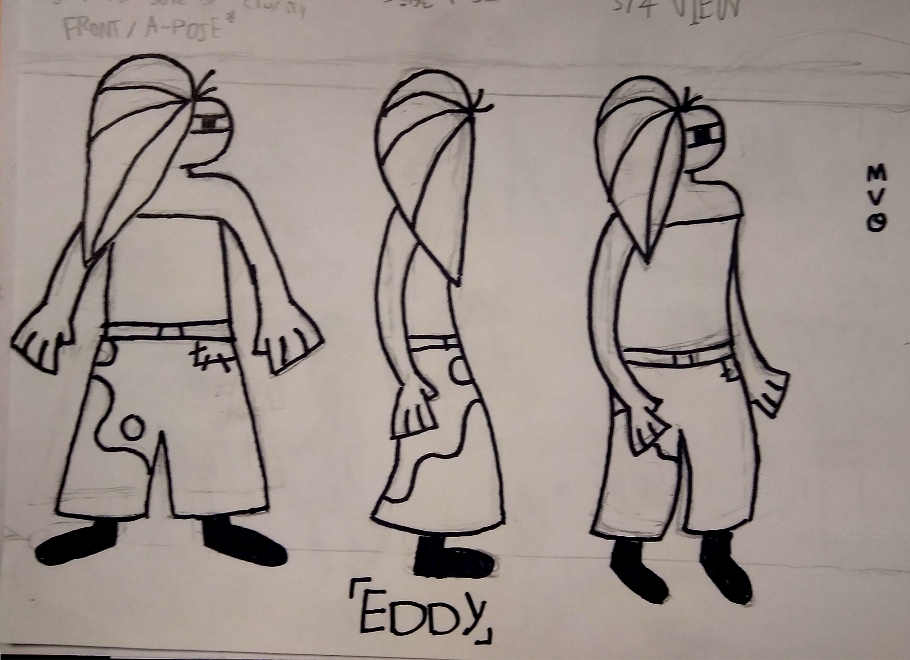
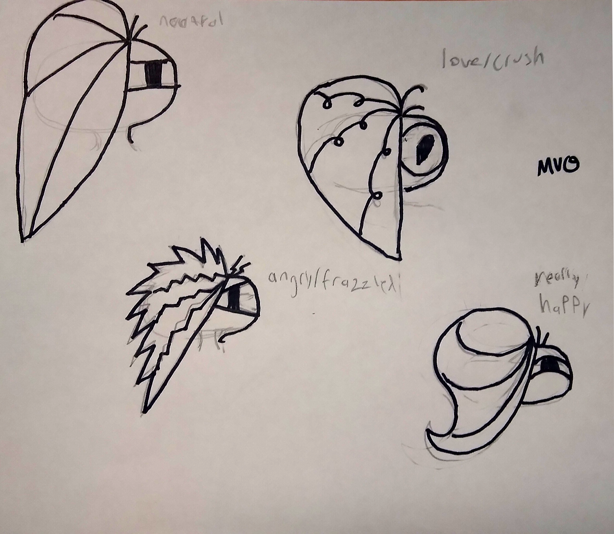
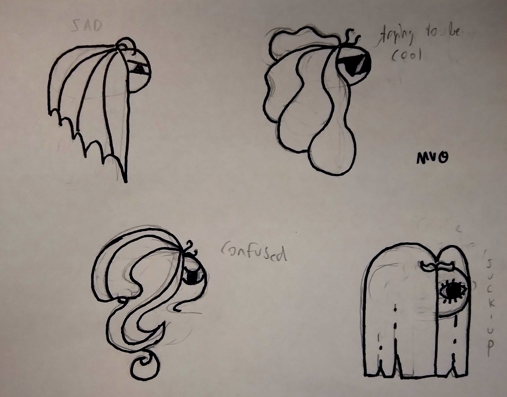

Animation
This class had me make a proper character sheet for the first time!

This is a character sheet showing my character, Eddy, from the front, the side, and a 3/4 view. I had a lot of fun with the hair, as you will see soon.
I took a lot of insporation from the geometric look of the cartoons I grew up with, like Total Drama Island.

This is some of my first experimentation with Eddy's facial expresiions. Without a visible mouth, I chose to use the shape of the hair to show how they feel.
My personal favorite expression from this page has to be the lovestruck one, witht the hair forming one half of a heart and the pupil forming the other half.

This page is some further exploration of Eddy's emotions. With this one I chose to dip into some more niche feeling, like trying too hard to be cool.
My personal favorite from this selection has to be the "being a suck-up" face. I don't even know why I chose that feeling in particular, It just came to me in a flash!
Back To the Homepage